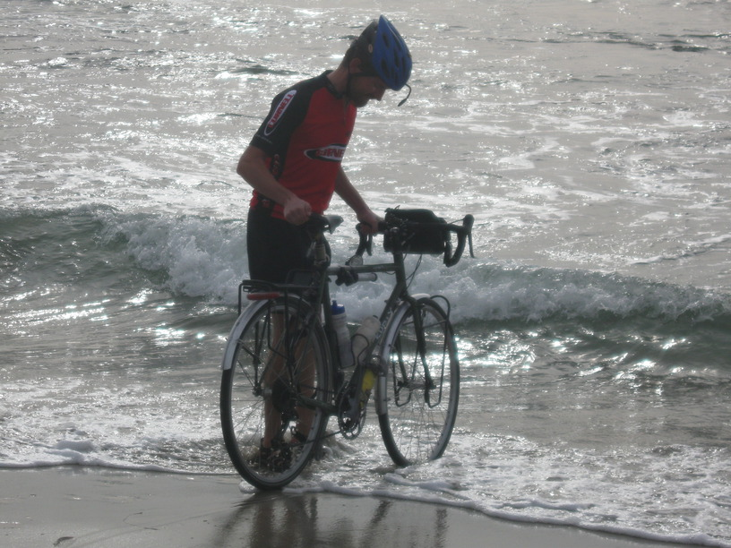
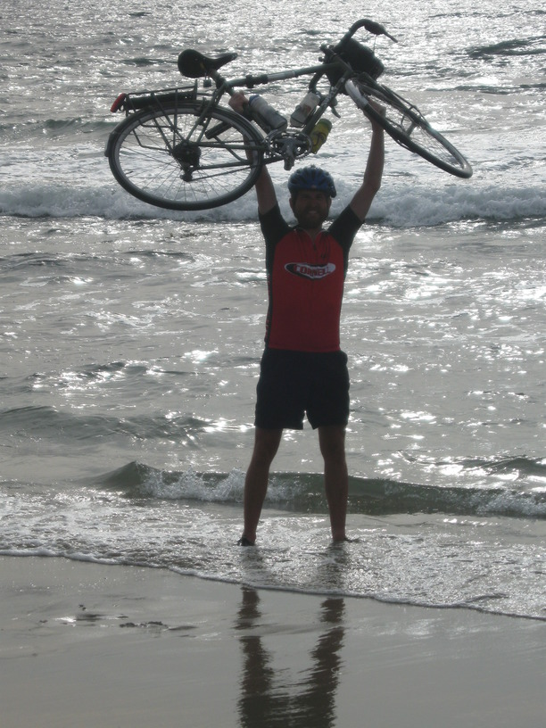
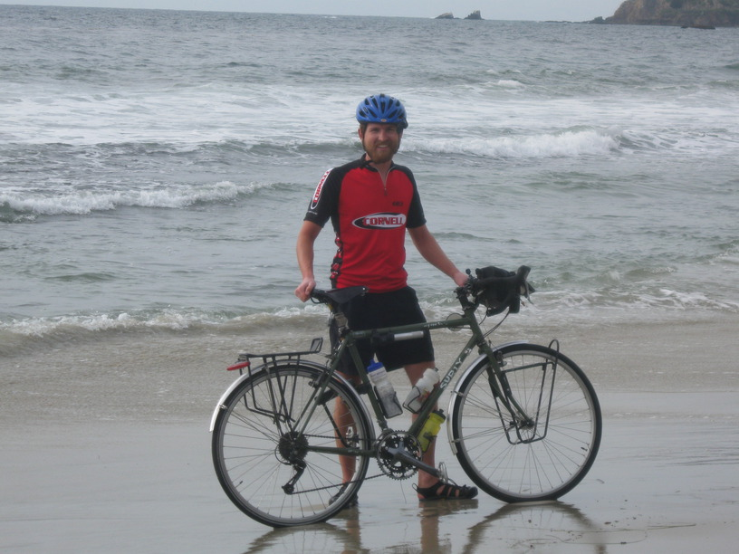
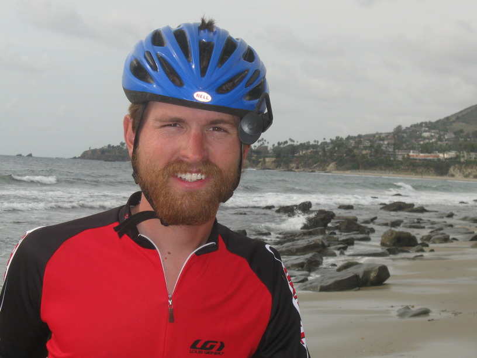

7 Dec 2008, Laguna Beach, CA
I'm done! I arrived at the Rowans' around 1:20 this afternoon. I don't quite know what to make of it. I guess I still don't have a sense of the big picture.
I saw a few people touring today—didn't get to talk to them though. One non-touring cyclist rode along with me for a few miles & had a lot of questions & congratulations for me.



